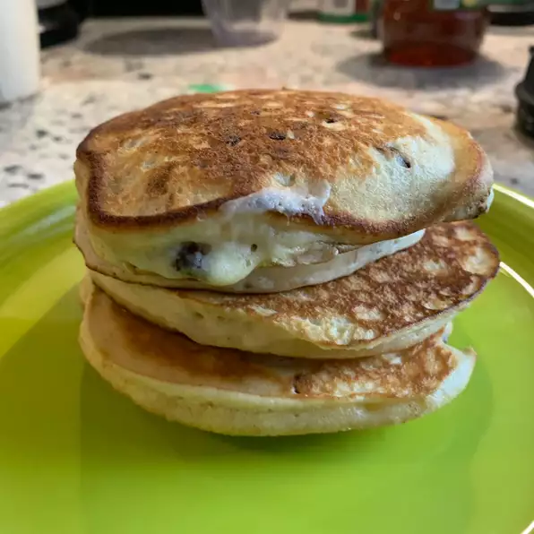

Buttermilk Pancakes

Ingredients
- 1 1/4 cups all-purpose flour
- 1 egg
- 1 1/4 cups buttermilk
- 1/4 cup white sugar
- 1 teaspoon baking powder
- 1 teaspoon bakng soda
- 1/4 cup vegetable oil
Directions
- Preheat a skillet over medium heat. Combine all ingredients in bowl. Stir
until blended. (do not over mix)
- Pour batter onto the griddle, to form 5 pancakes. Flip pancakes when edges
appear to harden. Cook pancakes on other side for same amount of time until
golden brown.